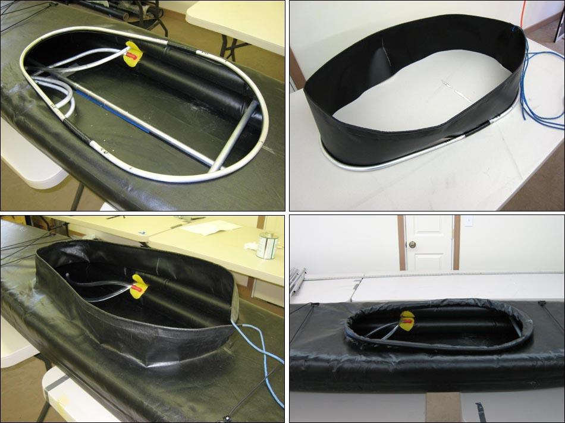

| Sonnet 16 | Menu Last Page Next Page |
|

Removable Coaming - A 30" X 16" (762 X 406mm) aluminum 2-piece removable coaming allows the skin to be folded smaller than with the permanent coaming. A drawstring is used to tighten the sleeve around the coaming.
|
|